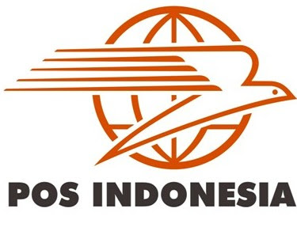

Sejarah Singkat Perusahaan
Sejarah Pos Indonesia bermula dari didirikannya Kantor Pos pertama di Batavia (Jakarta) oleh Gubernur Jenderal GW Baron van Imhoff pada tanggal 26 Agustus 1746 untuk menjamin keamanan surat-surat penduduk. Bentuk badan usaha perusahaan ini telah mengalami beberapa kali perubahan, mulai dari Jawatan PTT (Post, Telegraph, and Telephone), PN Pos dan Giro, Perum Pos dan Giro, hingga akhirnya menjadi PT Pos Indonesia (Persero) pada tahun 1995
Visi Perusahaan
Menjadi penyedia solusi logistik, kurir, dan jasa keuangan terpercaya yang terintegrasi secara digital di Indonesia.
Misi Perusahaan
- Menyediakan layanan pos, logistik, dan jasa keuangan yang handal, aman, dan berdaya saing tinggi.
- Mengembangkan jaringan logistik terintegrasi berbasis teknologi informasi untuk mendukung pemerataan ekonomi nasional.
- Memberikan nilai tambah bagi para pemangku kepentingan (stakeholders) serta mendukung program pembangunan pemerintah.
Produk dan Layanan Utama
- Pos Courier & Express: Pos Sameday, Pos Nextday, Pos Reguler, Pos Ekspor.
- Pos Logistics: Pengiriman kargo, pergudangan (freight forwarding & warehousing).
- Pos Financial Services: Pospay (aplikasi keuangan digital untuk pembayaran bills, transfer uang, dan jaminan sosial).
- Layanan Filateli & Benda Pos: Penjualan prangko, meterai, dan benda filateli.
Logo Perusahaan

Kontak dan Alamat Perusahaan
Kantor Pusat: Jl. Cilaki No. 73, Citarum, Bandung, Jawa Barat 40115, Indonesia.
Call Center (HALO POS): 1500161
Email: halopos@posindonesia.co.id